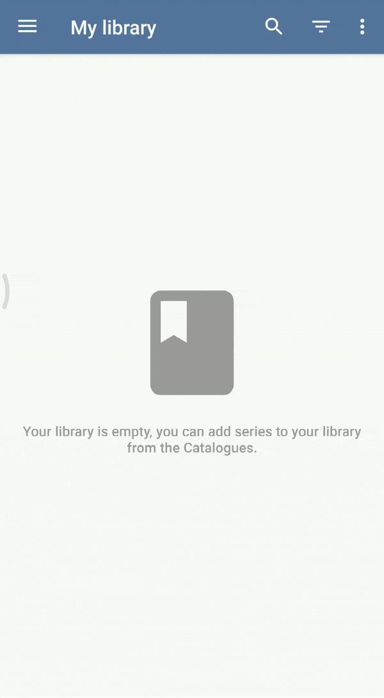

Getting started with Tachiyomi
Tachiyomi is a free and open source manga reader for Android.
Installation
1 Get the latest stable release from GitHub.
tachiyomi-vX.Y.Z.apk
2 Install the .apk file you just downloaded from GitHub.

Extensions
3 Now that Tachiyomi is installed, open the app and navigate to the Extensions tab.

4 In this guide we will use MangaDex, our most popular extension. Press the Install button and it will bring up the extension installer. If your phone does not allow third-party installations, follow this guide.
If you successfully installed MangaDex then it should now show up in the Catalogues tab.
The items appearing here are called Sources, an extension can contain multiple sources.

Library
5 To find manga, you can now either use the Latest button on your source, or you can use Browse and search for it.
6 Now that you've found manga that you want to add to your library, click on it and then press the blue bookmark button.
It should now appear in your My library tab, ready to be read!